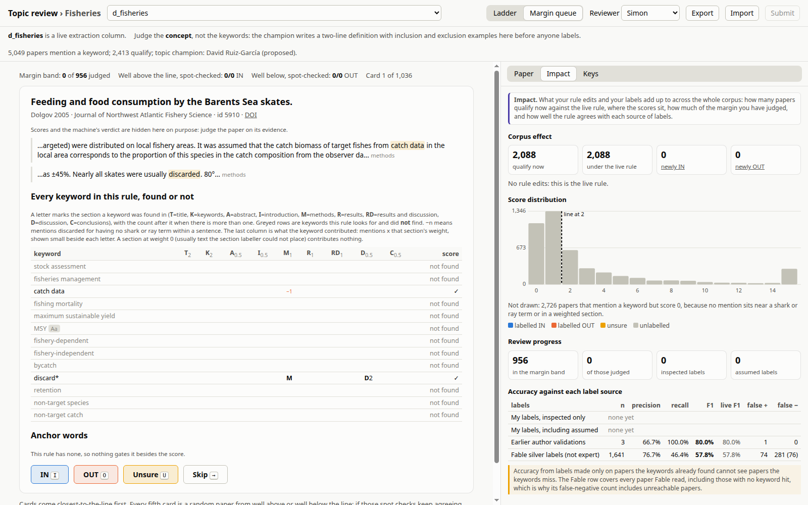
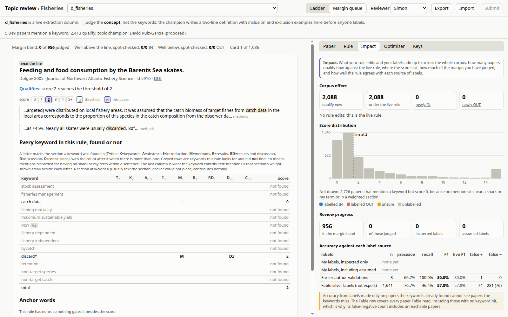
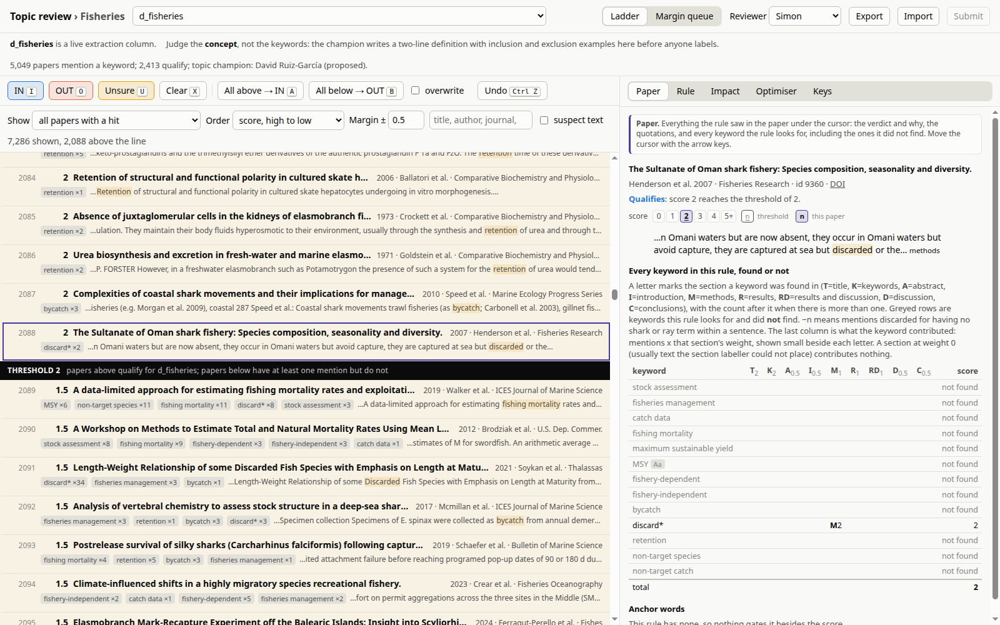
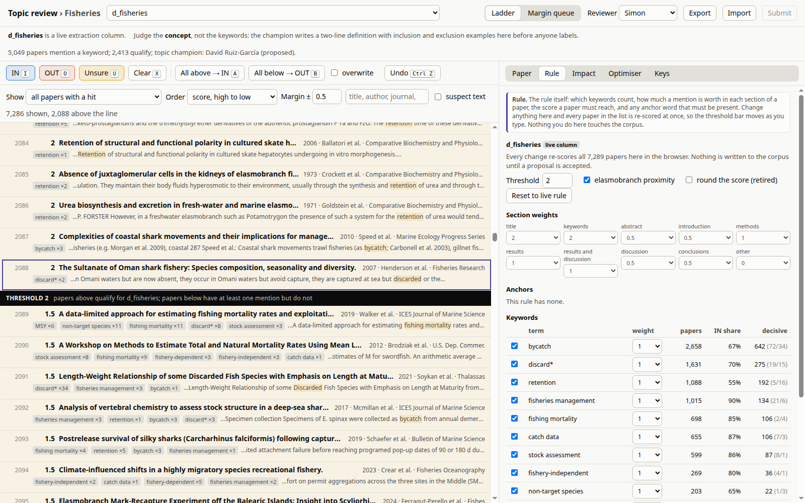
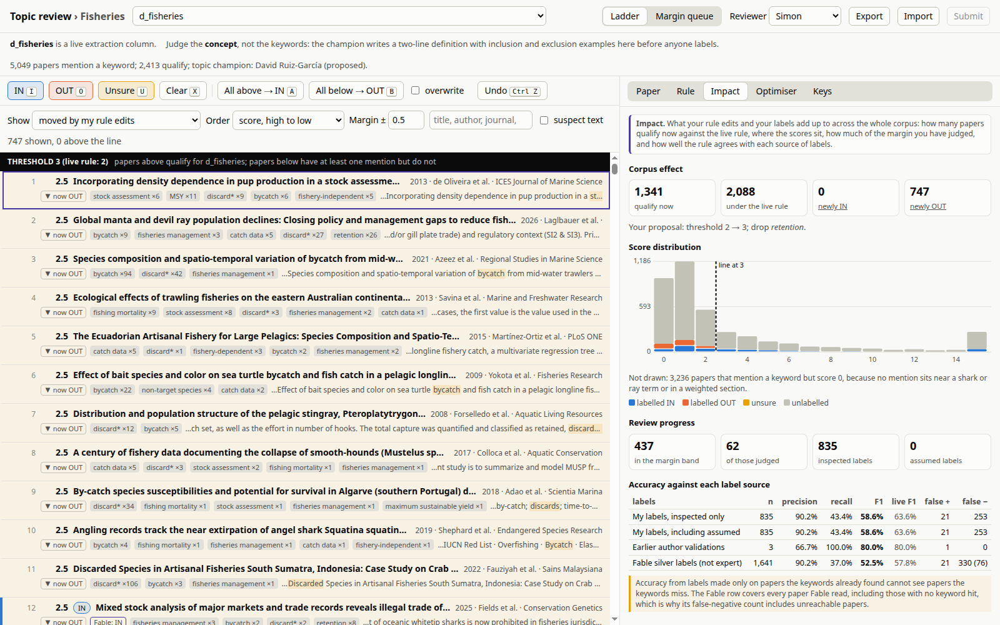
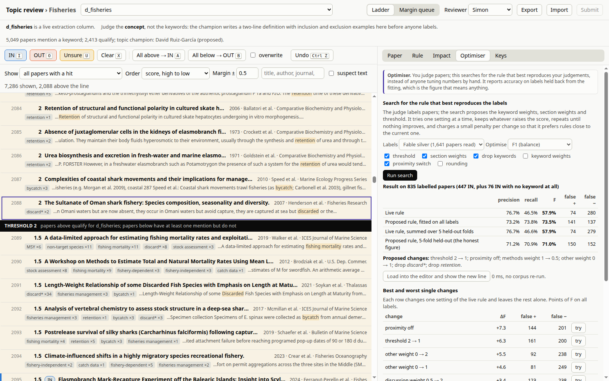
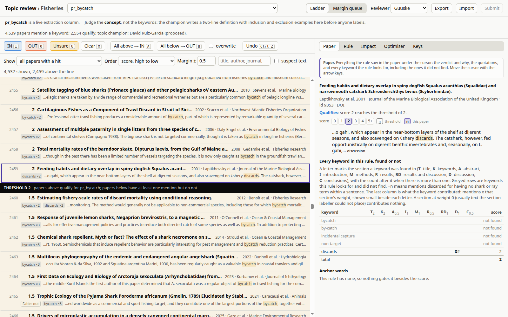
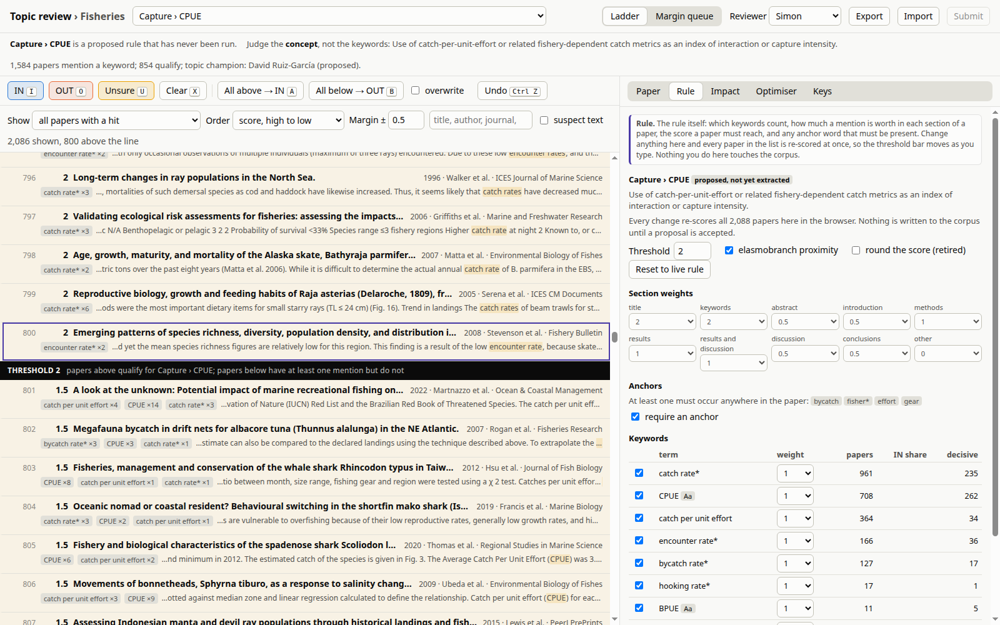

Every option judges the same question, "of every paper we hold, which are genuinely about this concept?", and every one of them records your answers the same way. They differ only in how much the page shows you and how much it asks for. Pick whichever suits how you work; you can switch at any time and your answers follow you.
The core job: say whether each paper really belongs to the concept. Start here.



For the concept's champion, once some papers are judged: change the rule and watch what it does to the list.



Two people on one concept, and concepts that have never been run.

